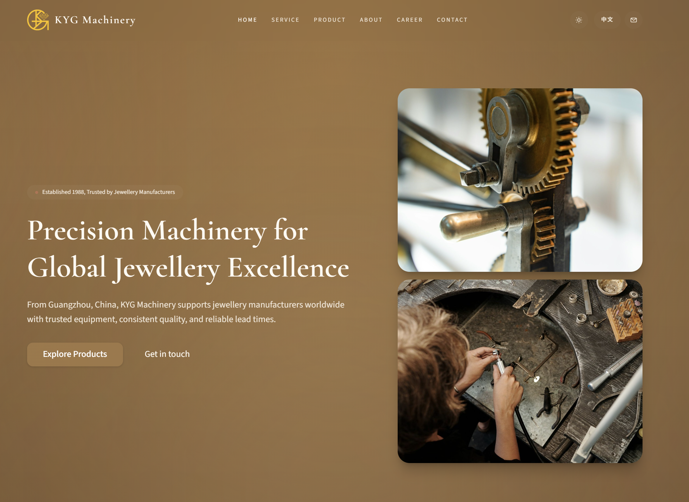

2023-2025
About


I'm Leila Lin, also known as Xinyi Lin, a quantitative researcher and data analyst with a strong academic background in computing, finance, medical statistics, and health economics, supported by dual Master's training in Computing and Health Economics.
My recent work includes a computer vision and machine learning project involving the development and evaluation of efficient, transformer-based deep-learning models for medical image segmentation, and a quantitative population health research project conducting cross-country and longitudinal analysis of large-scale survey data to inform health system governance and policy-relevant decision-making.
Alongside research, I'm building a venture in the jewellery and equipment industry, exploring how traditional Chinese businesses can modernise and scale globally through a digital-first operating model. I'm developing an end-to-end platform - from product discovery and enquiries to structured product data, inventory, logistics, and reporting - with a focus on systems that make decision-making measurable, repeatable, and scalable.
Outside of work, I enjoy travelling, photography, and exploring the outdoors - surfing in summer, snowboarding in winter, and taking my two cats along for hikes.
Education
2022-2023
University College London
2020-2022
University of Liverpool
2021
London School of Economics
2018-2020
Xi'an Jiaotong-Liverpool University
2015-2018
Suzhou High School
Work
Company Website
- Built the site in Astro with a clean, maintainable structure.
- Developed a categorised product catalogue with search.
- Implemented an enquiry flow to capture and route product requests.
- Deployed on Cloudflare Pages with SEO essentials and enquiry conversion tracking.


EdgeMedSAM - Efficient SAM Adaptation for Medical Image Segmentation
- Conducted a large-scale accuracy–efficiency benchmark of SAM (Segment Anything Model) family models across 8 medical imaging modalities.
- Proposed EdgeMedSAM, a parameter-efficient medical adaptation of EdgeSAM for high-performance medical image segmentation.
- Achieved state-of-the-art accuracy–efficiency trade-offs on multiple external datasets, delivering fast inference, strong segmentation accuracy, and a compact model footprint.


Quantitative Evaluation of the Quality of Care Network (QCN)
- Conducted a cross-country and longitudinal quantitative evaluation using multi-wave QCN survey data.
- Designed and validated measurement frameworks using confirmatory factor analysis and reliability testing.
- Modelled cross-country and temporal variation in stakeholder perceptions using multivariable regression.
- Generated policy-relevant evidence to inform the governance and scaling of global maternal and child health networks.
- Part of a UKRI-funded project led by UCL; manuscript under review at BMC Health Services Research.

Contact
Want to collaborate, swap ideas, or just say hi? Drop me an email.
leilalin119@gmail.com